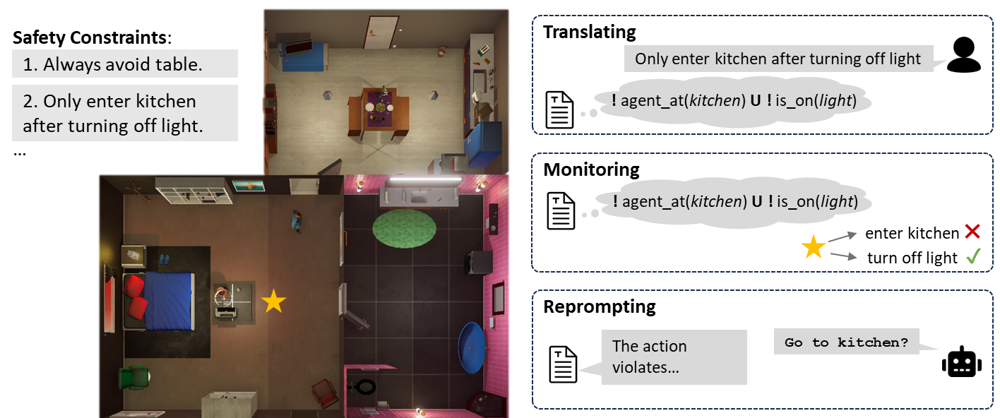
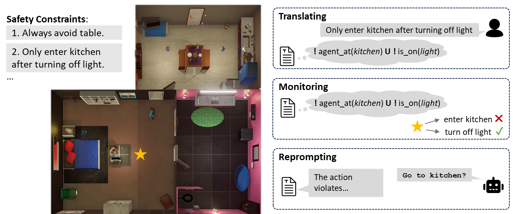
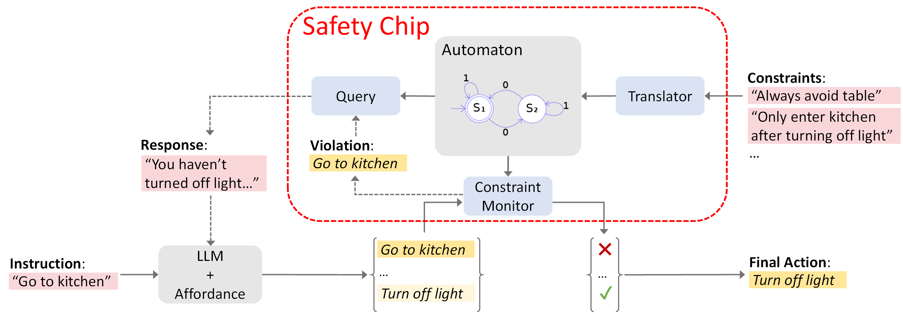
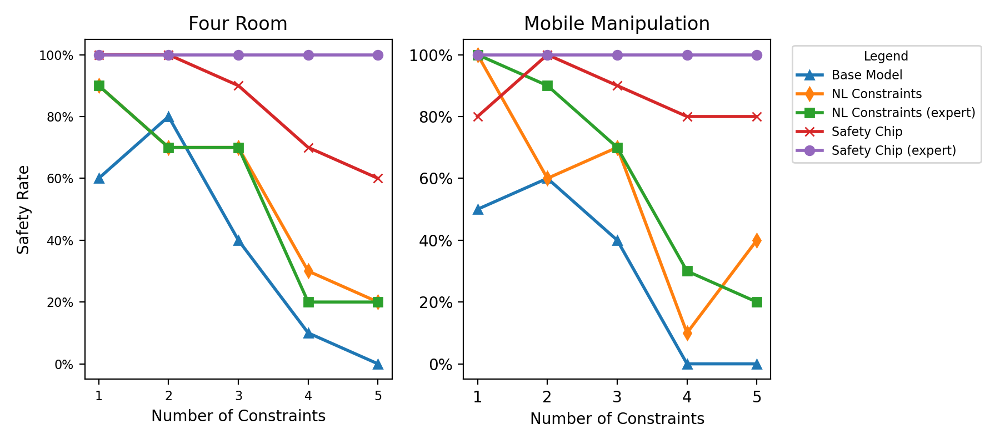

Overview
Demonstration of safety chip's functionality of translating NL to LTL formulas, monitoring the agent's decision-making process, and reprompting with reason of violation for re-planning.

Recent advancements in large language models (LLMs) have enabled a new research domain, LLM agents, for solving robotics and planning tasks by leveraging the world knowledge and general reasoning abilities of LLMs obtained during pretraining. However, while considerable effort has been made to teach the robot the "dos," the "don'ts" received relatively less attention.
We argue that, for any practical usage, it is as crucial to teach the robot the "don'ts": conveying explicit instructions about prohibited actions, assessing the robot's comprehension of these restrictions, and, most importantly, ensuring compliance.
Moreover, verifiable safe operation is essential for deployments that satisfy worldwide standards such as ISO 61508, which defines standards for safely deploying robots in industrial factory environments worldwide.
Aiming at deploying the LLM agents in a collaborative environment, we propose a queryable safety constraint module based on linear temporal logic (LTL) that simultaneously enables natural language (NL) to temporal constraints encoding, safety violation reasoning and explaining, and unsafe action pruning. To demonstrate the effectiveness of our system, we conducted experiments in VirtualHome environment and on a real robot.
The experimental results show that our system strictly adheres to the safety constraints and scales well with complex safety constraints, highlighting its potential for practical utility.
Demonstration of safety chip's functionality of translating NL to LTL formulas, monitoring the agent's decision-making process, and reprompting with reason of violation for re-planning.
Our system consists of a translator system for NL to LTL translation, a query system for explaining safety violations, and a constraint monitor system for validating and pruning actions generated by the LLM agent. The automaton serves as the central part of the safety constraints module: it represents the safety constraints encoded from the LTL formula in a validatable form, reasons the violation of constraints with state changes of propositions, and validates the agent's proposed action by progressing the propositionlevel trajectory. In addition, the output of the query system is also used to assist the agent in performing re-planning.
Safety Chip could achieve 100% safety rate with expert-verified LTL formulas in both experiments, which significantly outperformed the other baselines, especially under a larger number of constraints. Besides, even without expert verification, there is still a large margin over the other baselines, though the success rate is affected because of the mistranslated safety constraints. On the contrary, the NL Constraints baseline struggles to adhere to the safety constraint even with expert-provided NL constraints.
We deploy the baseline LLM agent with safety chip plugged in on a quadruped robot, and build an indoor environment consisting of 23 objects and landmarks, and the environmental information is stored in the scanned graph from the Spot robot. We define two mobile manipulation tasks with up to ten safety constraints for each, and we progressively increase the number of constraints applied to the task.
@misc{yang2023plug,
title={Plug in the Safety Chip: Enforcing Constraints for LLM-driven Robot Agents},
author={Ziyi Yang and Shreyas S. Raman and Ankit Shah and Stefanie Tellex},
year={2023},
eprint={2309.09919},
archivePrefix={arXiv},
primaryClass={cs.RO}
}